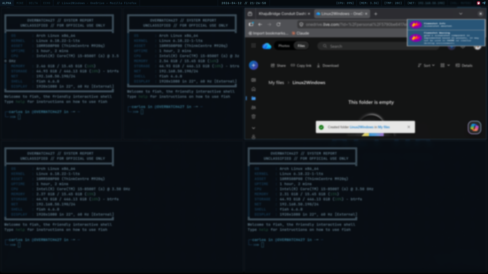
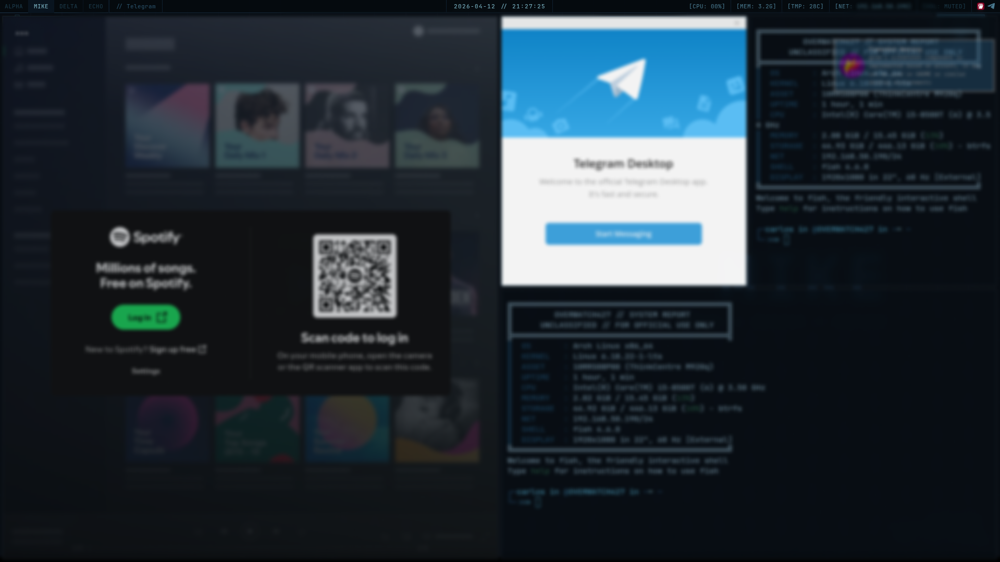
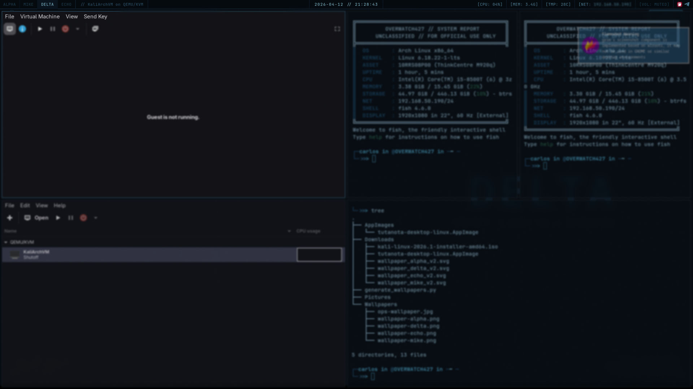
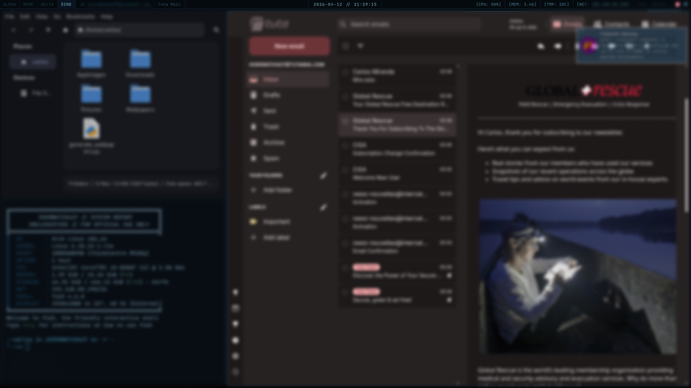

SIGINT-01 // DOTFILES
A dark, minimal Arch Linux + Hyprland environment built for IT operations, security research, and terminal-heavy workflows. No clutter. No distractions.
// WORK IN PROGRESS // This build is actively maintained and evolving. Config files, theming, and the install script may change between commits. Test in a VM before deploying to a production machine.
MISSION BRIEF
Most desktop setups make you choose between usability and aesthetics. SIGINT-01 doesn't. It's built around the idea that your environment should disappear — dark enough to reduce eye strain during long sessions, fast enough to never get in the way, and organized enough that you always know where you are.
The build targets people who spend most of their time in a terminal: sysadmins, penetration testers, CTF players, and developers who run VMs and need their workspace to stay focused. Four workspaces, one purpose each. Nothing running that doesn't need to be.
Everything flows from a single color scheme — deep steel blue backgrounds, cyan accents, no rounded corners, monospace everywhere. The same palette runs through the window manager, status bar, terminal, lock screen, system monitor, fetch tool, and custom-generated wallpapers.
WORKSPACE LAYOUT
COMPONENTS
DEPLOYMENT
# Clone the repository $ git clone https://github.com/delejos/sigint-01-dots.git ~/sigint-01-dots $ cd ~/sigint-01-dots # Run installer — handles packages, symlinks, wallpapers, services $ chmod +x install.sh && ./install.sh # Optional: apply hardened sshd_config $ INSTALL_SSHD_CONFIG=1 ./install.sh
▸ Requires a base Arch Linux install with internet access and sudo privileges.
▸ Installs all packages via pacman and yay (AUR helper installed automatically if missing).
▸ Test in a VM before applying to a production machine.
KEYBINDS
PREVIEW



